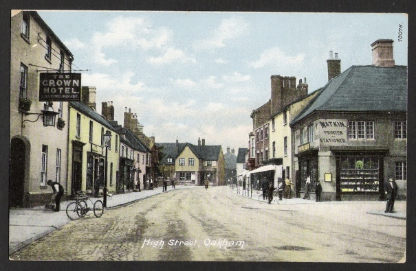
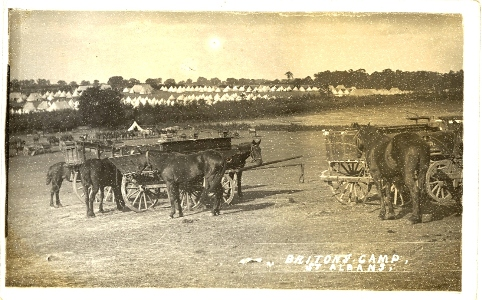
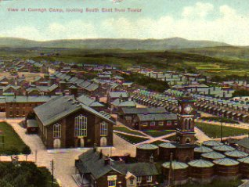
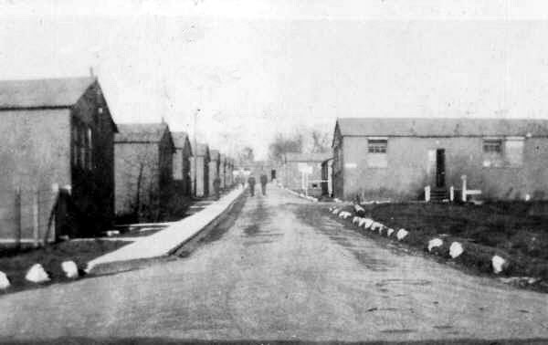
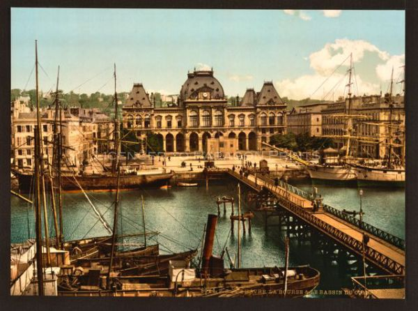

An account of the war service of Charles Cramp of Oakham, Rutland, who joined B Company of the 2/5 Leicestershire Regiment. It is possible that his path and Bill Drury's path could have crossed. This account has been provided by Charles Cramp's grandson, Jim Sharp of Ontario, Canada.
I joined the army on October 10th 1914 and became a Private in the 2/5th Battalion Leicestershire Regiment. Our Company (B) was stationed at its HQ at Oakham from where we went to Hinckley on 7 November, billeted with Mrs Payne, 11 Charles Street.

Proceeded on leave December 24th and rejoined my Company on December 30th at Loughborough, billeted with Mrs Graves, 5 Albert Prom. Whilst at Loughborough the 4 Companies per Battalion order came into force but our Company remained 'B' after being amalgamated with the Ashby Company. Started signalling here under the tuition of Sgt Wayne. After a very happy time the Battalion moved to Luton on January 19th 1915, billeted with Mrs Jones, 49 Queens Street.
From Luton we moved to Epping to dig the first line of defence around London. Whilst there I fell sick of measles so did not do much trench digging. From Epping we moved back to Luton, billeted with Mrs Franklin, 13 Chequers Street. From there we moved into camp in Stockwood Park and from there to Britons Camp, St Albans.

Next we moved into an empty house called "The Gables" at Harpenden. Myself and two others were transferred to 59th Division Signal Company RE on December 6th 1915 at Harpenden. Moved our billet to Mrs Bingham's, Station Road (near Batford). Spent Christmas there and had a jolly time. Later on our section moved to the other side of the town into an empty farmhouse — a very poor billet. We moved from there with the rest of the Company to Westoning on February 28th 1916, billeted with W Bass, Stanley Cottages. A very good billet.
We went there to complete our training as a Signal Company and so had many schemes, our biggest one lasting 4 days during which we travelled as far as St Neots in North Bedfordshire. Very bad weather, but we had a good and interesting time on the whole. From Westoning we moved to St Albans, billeted with Mrs Smith, 58 Kings Road. I was in hospital there a fortnight with an abscess on my right hand as a result of trenching at Houghton Regis whilst stationed at Westoning. Went home on leave on April 14th and went to Loughborough from Saturday until Sunday night and had a good time. We next moved to Ireland in consequence of the Sinn Féin rebellion.
Leaving St Albans at 9pm on April 24th (Easter Monday) we went by train to Watford where we slept on the pavement. At 4am on the 25th we boarded the train and went via Rugby to Liverpool Docks, arriving there at 10am. Sailed at 3pm and arrived at Kingstown at 10.30pm after a rough crossing. Very sick and tired out and rain falling nicely. We spent that night in a convent just outside Kingstown, sleeping in any old place we could find. On the 26th we moved through Blackrock to Ballsbridge on the outskirts of Dublin. The inhabitants gave us a hearty welcome and we established Brigade HQ in the Town Hall.
Since leaving St Albans myself and a few more of our section had been attached to the 178th Infantry Brigade Signals Section, as their men were on leave when the move was ordered. The 178th Brigade were the first across, and we went on the second boat. For the night of the 26th myself and J.L. were on sentry duty outside the HQ. On the next day we moved round to the far side of the city, making our HQ in Kilmainham Royal Hospital for old soldiers. On the way we were fired upon from houses in South Circular Road at 2.30pm and the infantry had to go forward before we could proceed. We got going again about two hours afterwards after a stirring time and having used a lot of ammunition.
We stayed at the hospital, living chiefly on bully beef and biscuits and sleeping in the corridors, until our own section (177th Brigade) had been at Ballsbridge a day or two, when we rejoined them. Very pleased to do so. We stayed there and had a good time when the fighting had finished — explored the zoo in Phoenix Park one day, and had several trips to the city sightseeing and patronising the theatres. Left Dublin (Kingsbridge Station) for Fermoy, Co. Cork on May 27th. Sorry to go but had a nice journey. We arrived at Fermoy at 8pm and marched to the Old Barracks. We had a good time and fine weather there — went boating on the Blackwater several times and cinema three times a week with good music.
On July 18th we moved part of the section up to Kilworth Camp to do our trained soldiers' course of firing. We were under canvas and though canteens and other amusements were scarce we had an enjoyable time. No parades except for firing. Very hot. Later in the year we moved across to the New Barracks where we went into the married quarters and were very comfortable.
On September 11th we moved to Curragh Camp, Co. Kildare, where the Divisional HQ and the rest of our Company were stationed. We were supposed to have gone for technical training but all we got was horse line fatigues and wagon cleaning, so were soon fed up with that. Plenty of amusements and canteens here and we had a fairly good time on the whole. But we were pleased when the order came for us to rejoin our Brigade at Fermoy on October 20th and went into the New Barracks again.

I went home on leave on November 21st via Rosslare and Fishguard to attend my grandfather's funeral. Got back again alright. We moved to Curragh for the second time on December 8th. Had Christmas there and had a fairly good time. Very wintry weather and we often lay cold at night. Coal rations were very scanty so we purloined some from the dump for Christmas and got into hot water for it. But the coal was worth it. The band of the Dublin Fusiliers played some fine music on New Year's Eve and we lay in bed listening to it all. I had some fine gallops whilst there across the Curragh.
Move to France
We left Curragh Camp at 1.15pm on January 6th and marched to Kildare Station. Arrived North Wall (Docks) at 3pm and sailed at 9.45pm, having a good crossing to Liverpool which we reached at 7.45am on the 7th. We had free refreshments and stood chatting a while with some American passengers who had just come in on the SS Philadelphia (torpedoed 3 months later), then got our baggage shifted. Left Liverpool at 11.40am, passed through Crewe at 1.15pm, Wolverhampton at 3pm, and arrived at Denton about midnight. Marched up to our camp at Fovant and got into bed at 2am on January 8th.

We had some very hard weather whilst at Fovant and I had to go into dock with tonsillitis. Had a good time in there but nearly missed my embarkation leave through it. The troops were busy with the final stages of training, being fitted out for France, vaccination etc. I was discharged from hospital on February 2nd and went home on the 5th till the 10th. Vaccinated February 12th.
Left Fovant at 11am on February 17th. A lot of bustle and confusion regarding transportation. We sailed at 4.15pm on the 18th from Southampton. Our boat was a captured and renamed German merchant vessel — the SS Huntscraft. None too clean, and her crew consisted mainly of Chinese. Weather very foggy so we had to drop anchor at 5.10pm. We had another try on the 19th but had to stop twice more. The officer in charge was a persevering sort of chap so he had another go at 5.30pm but had to stop again half an hour afterwards.

Troops were all fed up and wanting to get out and march across. We got going again at 4pm on the 20th. It was still very foggy so we were hardly surprised when the old tub ran aground off Cape de Antifère (France) at 11.50pm. Rather an exciting time as there were enemy submarines about and we were on the rocks and couldn't move. Our escort, two torpedo boat destroyers, stood by us all night. Next morning when it got light and the fog lifted we could see the face of the cliffs no more than 30 yards away and towering up above us. A tug had been sent for but couldn't tow us off, so the escort and tug took the men off the transport. I got on board TBD 22 at 7.45am on February 21st. The sea was rough and the ships were rolling about, so it was no easy job crossing the gangway with full kit and rifle, and when I landed on the destroyer I was nearly electrocuted through coming into contact with the wireless aerial. But when we did get started we went into Le Havre at about 30 knots per hour.

Jumped ashore at 9.15am and was very pleased to do so. We then had a meal in some huts erected for the purpose on the dockside — the first in France. Marched up a long hill to rest camp and had a night there, about 20 in a tent and tons of blankets. We slept very warm that night although it was freezing hard. We left Le Havre by train on the 22nd at 9pm in cattle trucks but were fairly comfortable and keen to be getting up the line.
On February 23rd we detrained at Longeau (near Amiens) after passing through Amiens station at 3pm. Moved off about 5pm for Saleux, 4 kilometres away. Captain Green of 515 Company ASC led the way and got us lost. Marched 10 miles and got to Saleux at 10pm, fed up. Billeted in a convent and slept that night on straw — slept well at that. Got up at about 9am the next day and made the horses comfortable. One poor beggar tried to drown himself, had evidently heard of the hard times in front of him. Anyhow he walked into a stream about 4 feet deep and laid down with his head under water. It took two long ropes, a company of men, two more horses, and four hours to get him out. Then the vet made us leave him behind when we moved again, so we might just as well have let him drown. Bought some French bread there — loaves two feet long. We thought it was very funny stuff to have the name of bread. It went sour after 24 hours, but it was a welcome change from biscuits.
Moved up to Bayonvillers on March 1st. Myself and two more were lucky and rode all the way in a motor ambulance with the signal stores. The rest of HQ marched it. Found Bayonvillers very much knocked about by shellfire. Sam Humphries and I got a nice little house to ourselves — fireplace and beds, a door which functioned properly and plenty of rations, so we were well away.
On the 4th March the section, less the drivers and myself, moved up to PC Bulow which was then rear HQ of the Brigade we were relieving. From there we went forward to PC Hedevaux which had been advance BHQ but was now the rear in consequence of the German retreat. We could see towns and villages on fire at night and felt sure the Boche had shot his last bolt and was on the run. But we were mistaken.
From PC Hedevaux we marched forward to Éterpigny, just over the River Somme. Rigged up the office in a ruined house and had to spend the night there, too cold to sleep. We were glad when morning came. We spent another two days there and moved to Cartigny on 28 March 1917. I was detailed to push a cycle to the new place — it was impossible to ride it — and on the way we should go about 50 yards and then have to stop and scrape the thick mud and clay out of the forks to allow the wheel to go round. I cursed the bike, the roads and myself too for being such a fool as to have one, but anyhow we got to our destination alright after a struggle.
All this time since leaving PC Bulow we had seen no signs of the enemy being about, though there were plenty of signs of his recent occupation. Orchards felled, crossroads blown up and plenty of refuse and filth everywhere. We were at a villa called Le Catelet, just outside the village of Cartigny. There was a fine piano inside the villa, and of course one of the chaps thought he'd see if there was any tune in it. He had only touched two or three keys when there was an explosion inside the piano and he lost half his right hand. The Boche had put a grenade inside in such a manner that anyone striking a certain key let the grenade off. A nice trick.
On 31st March we left Le Catelet early in the morning and marched up to battle HQ in a trench on a hilltop overlooking Roisel. It was there that I came into contact with the Boche again. Our Brigade had to take Roisel and hold it, and the attack commenced about 1pm, the 2/5 Leicesters doing very well. We got the town and went well beyond it, and the front line that night was in a system of quarries about 3 miles east of Roisel, around Templeux. It was wild country and we hadn't much idea what we were doing. We'd had enough of it for one dose.